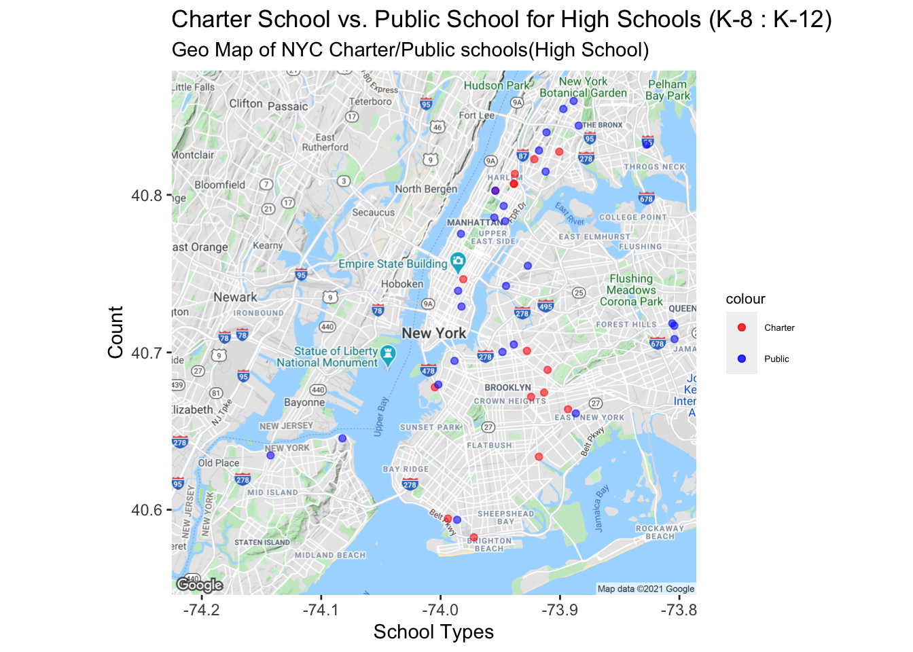

Chapter 5 Results
5.1 Preparing NYCgeo package and the base map (boundaries)
- A visualization of the NYC map by census tract boundaries
This map boundary of NYC will be the basis for the geospatial plots.
Why we need a boundries map before we get into our business?
- The census data, along with our other datasets, contains longitudes and latitude data, including the NTA codes with geospatial information. We need to create a tile map, a base map for us to plot our data on first. Once this tile map is created, we can plot our points and generate approperiate visualizations.
- NYC Census Data Examples - NYC residents College degree census
To confirm that the map boundary that we created above works, we implemented an example map that shows the percentage of people that has a Bachelor’s degree and above in NYC. We can see that the area that has the most university graduates are in Manhattan, especially up to what appears to be Morningside Heights, and in Brooklym close to Manhattan.
Such an example demonstration of New York census data and what kind of information it recorded, is widely used in investigating child poverty of New York.
5.2 Explore characteristics shared by schools
Grades in schools
##
## 6 to 12 7 to 12 9 to 12 9 to 14 K to 12
## [1,] 74 1 335 7 4
##
## School is structured on credit needs, not grade level
## [1,] 4The table shows that schools are mostly from grades 9 to 12, and 6 to 12.
We want to see characteristics of these schools, especially in what classes and diploma are offered.
We separate the columns of such columns by "," since they are currently in a free text form and change them to categories.
5.2.1 Courses and Programs
- Available language classes according to borough
The order of language classes in the x-axis are ordered by their total frequency. Thus, Spanish is the most taught foreign language in high schools, followed by French, Italian, and Mandarin.
However, it is difficult to see in the above graph which borough offers the most language classes, so we create a treemap to observe.
- AP courses available by borough
The order of the x-axis shows the most offered AP courses, insinuating a certain popularity of such AP courses in high schools. In accordance to the language courses, Staten Island has the least schools and thus the least variety of courses offered.
5.2.2 Demographics
- Demographics of high school students in New York in a whole
- Population of students and number of schools per neighborhood

Largely, the number of students that go to school in a certain area seem sto be in proportion to the number of schools in the corresponding neighborhood. However, in certain neighborhood in Queens and in Lower Manhattan seems to have outliers, where there are more students than surrounding neighborhoods that have more schools.
So, we would like to see how many schools there are per 100 students.
Here in this graph, the higher the ratio would indicate that there are more schools per number of students, where as the darker areas indicate that there are fewer schools per students than other neighborhoods.
- Student demographics by borough
Although the number of students per borough are significantly different, it is suaprising that the proportion of students of a certain race among big boroughs like Brooklyn and Manhattan are similar.
5.3 Different Categories of schools in NYC
- Find all categories of the schools in NYC.
## [1] "Charter School"
## [2] "Elementary School"
## [3] "Intermediate School"
## [4] "Academic High School"
## [5] "High school - Public"
## [6] "Special Education School"
## [7] "Junior High-Intermediate-Middle School - Public"
## [8] "Elementary School - Public"
## [9] "K-8 School - Charter"
## [10] "K-8 School - Public"
## [11] "Secondary School - Public"
## [12] "Elementary School - Charter"
## [13] "K-12 all grades School - Charter"
## [14] "Junior High-Intermediate-Middle School - Charter"
## [15] "High school - Charter"
## [16] "K-12 all grades School - Public"
## [17] "School"
## [18] "Secondary School - Charter"
## [19] "Vocational High School"
## [20] "Educational Skills Center"
## [21] "Alternative High School"
## [22] "Public School"We have create an overview histogram that showed how many, and what kind of the schools NYC has in total. All of the school are carefully labeled. From the histogram, we can see that the Public schools are clearly the majority of the educational institutions, follow by charter schools, which are run under private board and custom agendas(part of them are private and for-profit). The histogram showed the popularity of public institution in K-12 system in NYC.
In the dataset we have noticed that there could be a fine line between high school institution and non-high-school institutions among all of these different names of categories. And this line became our boundries of investigations. Our questions below has been divided between high school and non-high-school scenarios. As seen previously in the data cleaning process, high schools are not strictly from grades 9 to 12 but there are also schools from grade 6 to 12, or K to 12(all grades) schools.
Thus, it would be inefficient and ineffective to plot something like below, only showing for highschools:
5.3.1 Geo-spatitial Interactive Map of NYC school datasets
We read in the New York School Data, which recorded name, type, and location information for all New York schools for people under 18. We use ggmap package to create this interactive map and use Google Map API to map the geospatial data to the map.
This interactive map have multiple styles of base map. Each plot point represents a school, zoom in will reaveal more details: if click on the point, it will show the information of the school: name, categories of the school and its id. It’s not hard for us to find out the general distribution of the schools are concentrating on the north of Manhattan island and middle of Brooklyn. Except these 2 hot zones, the other part of the NYC has their schools scattered.
5.3.2 Investigating the school locations.
The charter schools are schools that do not charge fees to student who take state exams. Compare to public schools, they receive less funding but have more autonomy in the administration of education. From the plot, we can see the charter schools(in red dots), which are designed to compete with public schools, are much fewer compared to purple dots. This showed in the elementary to middle school level, people trust NYC public schools in general. The distribution of the publics schools among all NYC tracts could also be considered equal: they are not visibly over-crowded in one or more specific areas.
This provided the evidence that the public schools from elementary levels are well supported by NYC education branch of the government funding.
5.3.3 Maps high schools

In the high school level, we witnessed that the amount of the charter schools and the public schools are almost equal. One reason behind this is that Charter school in High school level can recruit more students compare to Elementary level, which provided more fundings to the Charter school. This allows Charter school to enhance its performance. The other reason is that compare to elementary public schools, public high school receive less fundings from the NYC government. This, even though didn’t suggest that Charter high school are necessarily better than public high schools, but its indication revealed that we should invest more on public high school education.
5.3.4 Graph of the vocational high school
## NULLVocational high school, alternative high school and educational skills center are vocation-purpose institutions. It aims at providing another option for educating middle students to a specific profession and introduce them to the job market. Vocational training institutions are assisting to the college system and beneficial to the whole society.
In this graph, we see there are not many such institutions in NYC city. Could this be a direction of public support? In Germany both such institutions are well-funded and it helped greatly to the job market and lowers the unemployment rate.
5.3.5 Intermediate schools
## NULLAnother interesting question we would like to investigate is the Intermediate school option. Intermediate schools are the schools for students in Grade 7-8, which equals to middle school level. Intermediate schools provided another option for students who graduated from elementary school level (over 6-grades) but not in a K-8 or K-12 school. The reason why we are investigating this is to see how many parents will decide to opt-out of the middle-high school system and reallocate their kids to another school specifically.
The Intermediate schools, along with Junior high schools, are popular options in NYC. The graph showed a relatively balanced numbers of Intermediate schools and non-intermediate schools.
5.3.6 Special education school mapping
## uid facname factype latitude
## 15 8671 PS 34 Special Education School 40.85028
## 115 22605 PS 25 & PS 4 Portable Special Education School 40.53969
## 187 136781 PS 148 Special Education School 40.78633
## 333 47522 PS 177 & Playground Special Education School 40.74327
## 340 167497 PS 58 Special Education School 40.76416
## 411 124528 PS 811 (Old PS 187-Cmhc)&Plygd Special Education School 40.75646
## 561 87078 PS 77 Special Education School 40.67873
## 723 193182 PS 369 Special Education School 40.68733
## 817 75115 PS 148 Special Education School 40.69925
## 832 83564 Special Education School Special Education School 40.81658
## 852 122213 PS 371 Special Education School 40.65417
## 1016 164809 PS 186 Special Education School 40.83140
## 1148 86898 PS 753 (Old Sterling HS) Special Education School 40.68263
## 1361 115499 IS 24 Annex Special Education School 40.56403
## 1616 97115 PS 9 (Old PS 86) Special Education School 40.71831
## 1704 119297 PS 751 (Old PS 25) Special Education School 40.72572
## 1724 149828 PS 721 Ax Otc Special Education School 40.84273
## 1734 122158 PS 226-Special Education Special Education School 40.73477
## 1749 69845 PS 75 Special Education School 40.69865
## 1784 122535 Jhs 47 Annex Special Education School 40.73700
## 1798 136789 PS 169 (Ecf) Special Education School 40.78082
## 1951 115500 PS 32 Mini-School Special Education School 40.55443
## 1984 91388 PS 17 Special Education School 40.83584
## 1985 112920 Speacial Ed School P.S 721 Special Education School 40.73577
## 2095 88964 PS 179 Special Education School 40.74175
## 2168 9492 PS 40 Special Education School 40.64093
## 2181 116384 Special Education School Special Education School 40.74741
## 2202 163841 PS 396 Special Education School 40.64895
## longitude lon lat
## 15 -73.88380 NA NA
## 115 -74.23694 NA NA
## 187 -73.97922 NA NA
## 333 -73.78733 NA NA
## 340 -73.98591 NA NA
## 411 -73.72870 NA NA
## 561 -73.97669 NA NA
## 723 -73.98326 NA NA
## 817 -73.94522 NA NA
## 832 -73.84824 NA NA
## 852 -74.00530 NA NA
## 1016 -73.89781 NA NA
## 1148 -73.96921 NA NA
## 1361 -74.15150 NA NA
## 1616 -73.91236 NA NA
## 1704 -73.98786 NA NA
## 1724 -73.83891 NA NA
## 1734 -73.99529 NA NA
## 1749 -73.90492 NA NA
## 1784 -73.97809 NA NA
## 1798 -73.95558 NA NA
## 1951 -74.14824 NA NA
## 1984 -73.88721 NA NA
## 1985 -73.86796 NA NA
## 2095 -73.77827 NA NA
## 2168 -74.09533 NA NA
## 2181 -73.99282 NA NA
## 2202 -73.95693 NA NA## NULLThe special education schools are for those who are with their disabilities. The special education school helps them to sustain/support themselves in the society. In NYC there are around 20 of these schools, but in NYC there are around 1 million people with disabilities, 20% of them are below 18, which means they are in the age of being educated. While NYC has provided enough public support in civil levels like public transportations, I urge special attention to education support for people with disabilities.
5.4 Student Diversity Satisfaction vs. Actual School Diversity
One of the questions on our mind was whether or not the perception that students’ had of the diversity in their schools actually corresponded with the actual diversity of their schools. To get an sense of this relationship, we generated a scatterplot of the # of students in each school, faceted by demographic, against the % of the student body that was satisfied with the diversity. From this, we were able to see a general trend where an increased representation, through # of students, was correlated with an increased positive sentiment of the student body on the diversity.